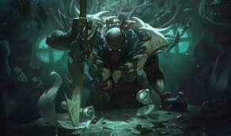
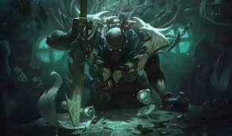

LOL SUPPORT 101
This is a all-in-one starter pack for support player in League of Legend.
For starter, there are 3 type of champion that are suggested for a proper support player:
Each one of these have their own pros and cons.
Tanker
Tanker is the easiest type of champion to start with when you start playing support role. You don't have to worry too much when you're catched by enemy team, with you high hp and armor/magic resist. However, you have to learn how to cover you ADC and open team fight. Recommened champs are Alistar, Nautilus or Leona.


Shield buffer/Healer
Healer and Shielder are the second best type of champs to play for starter support. Your only job is trying to buff your ADC and keeping him alive, when trying to keep position from all the predator enemy. Recommended champs are Yuumi, Lulu or Sona


Damage dealer
Damage dealer is a good type of champion you can consider as a new support. They usually deal a lot of damage and and most of the time "help" the ADC to execute the enemy. Recommended champs are Pantheon, Brand and Pyke

 
